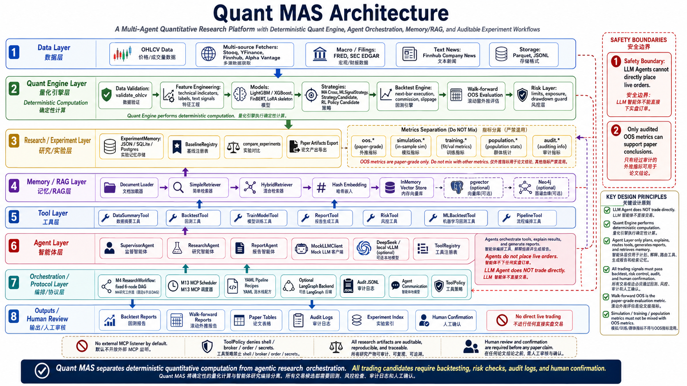
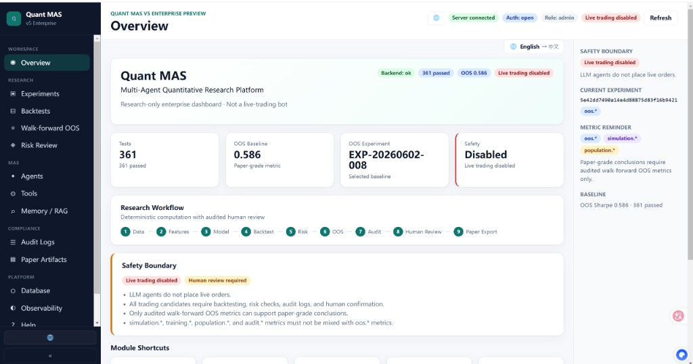

基于多智能体协同的量化研究平台 · SRTP 项目初期进展汇报
本平台在架构底层强制切断所有券商实时交易 API，聚焦于回测可复现性与学术审计。
| 功能矩阵 Pipeline | Quant MAS 平台协议 |
|---|---|
| 数据清洗 → 滚动回测 → OOS 验证 → 论文级审计 | ✓ 核心原生支持 |
| 实盘账户对冲 / 自动下单执行 | ✗ 物理安全禁用 |

Quant MAS Architecture — 8 层分层：数据层 · 量化引擎 · 实验记忆 · Memory/RAG · 工具 · 智能体 · 编排协议 · 输出与人工审核（右侧为安全边界与设计原则）

v5 Enterprise Research Console · Overview 仪表盘（本地浏览器经 SSH 隧道连接远程 GPU 服务器）
13+ 功能页面：Experiments · Backtests · Walk-forward OOS · Agents · Audit · Paper Export · Help。Job API POST /api/jobs 提交回测与 OOS 任务。
| 功能图层 | Quant Engine (数学内核) | Agent Layer (语言与决策树) |
|---|---|---|
| 核心计算指标 | 主算 Sharpe、年化权益曲线、最大回撤、时序特征计算 | 禁止直接计算连续指标，仅解析计算结果的文字逻辑 |
| 工作流有向图 (DAG) | 数据源输入 → 规则格式化验证 → 特征衍生矩阵 → 模型重训 → 回测计算 → 审计合规校验 | |
| 安全防线控制 | 历史模拟，严格防止时间前视函数 (No Future Leak) | 硬编码禁止接入实盘资金通道 |
每个工具实现 name、description 与 run(**kwargs) → ToolResult。Agent 和编排层只能通过工具访问 Quant Engine，不能直接 import 回测内核。
registry.register(tool) — 按唯一 name 入库，重名抛错registry.get(name) — 按名检索并执行registry.list() / names() — 导出 MCP 元数据、前端 Tools 页工作流默认注册：create_default_tool_registry() 注入 DataSummary · TrainModel · MLBacktest · Risk · Report
| 工具名 | 职责 | 典型参数 |
|---|---|---|
data_summary | 数据概览与行数审计 | path |
backtest | MaCross / 策略回测 | input_path, config_path, output_dir |
train_model | LightGBM 方向模型训练 | input_path, config_path |
ml_backtest | ML 概率 → ml_signal 回测 | features_path, model_path |
risk_check | 目标权重风控审查 | targets_path, config_path |
pipeline | 端到端数据→特征流水线 | symbols, skip_download |
report | 从 ExperimentMemory 生成报告 | memory_path, output_path |
tool_to_mcp_spec() — BaseTool → MCPToolSpec（name / parameters / safety_tags）registry_to_mcp_specs() — 批量导出工具 schema，供 Agent 与 UI 发现MCPToolCall(tool_name, arguments) — 标准化调用载荷TOOL_PARAMETER_SPECS 中显式声明类型与必填项ALLOW / DENY / REQUIRE_CONFIRMATION调用闭环：调度器或 Agent 发起 MCPToolCall → Policy 鉴权 → 通过后 registry.get(tool_name).run(**arguments) → 结果封装为 MCPToolResult 并写入 audit.jsonl。拒绝则直接 DENY，不触达 Engine。
接收自然语言任务 → 关键词匹配 RouteRule → 选定唯一工具 → 经 ToolRegistry 执行。全程记录 AgentEvent / ToolCallEvent / AgentFinishEvent。
| 关键词示例 | 路由工具 |
|---|---|
| 回测 / backtest | backtest |
| 训练 / model | train_model |
| ML回测 / ml_backtest | ml_backtest |
| 全流程 / pipeline | pipeline |
| 风控 / risk | risk_check |
| 报告 / report | report |
AgentContextBundle（实验指标 + RAG 片段），LLM 输出 JSON：hypothesis · evidence · suggested_experiments · risks。禁止建议实盘下单。max_steps，防止 Agent 无限循环。Web Job API 与 CLI 均可绕过 Agent 直接调 Engine；Agent 是「研究助手」，不是交易执行器。
Supervisor 是「单任务→单工具」；ResearchWorkflow 是「多节点状态机 DAG」，二者并存：
QuantWorkflowState — 跨节点传递路径、错误、completed_nodesrun_sequential_workflow() 或可选 LangGraph 后端nodes.py，每步注入同一 ToolRegistrystop_on_error 中止并回滚审计plan(recipe) — 拓扑排序依赖图，输出节点执行序run(recipe, dry_run=True) — 逐节点 Policy 鉴权 → 执行 → 写 audit.jsonlInMemoryMessageBus 发布 PlanMessage / NodeResultMessageexperiments.json，含 config、metrics、artifact 路径BaselineRegistry 锁定主 baseline（OOS 0.586）compare_experiments 跨实验对比，禁止混用指标族SimpleRetriever / HybridRetriever — 关键词 + 向量混合检索HashEmbeddingClient；生产可选 OpenAI 兼容 embedding · pgvector · Neo4j 图谱ContextBuilder.build(task) 合并实验快照 + RAG chunks → AgentContextBundle 供 ResearchAgent 使用详细拆解从规则基线到多阶段 Walk-forward 滚动回测的模型设计，涵盖特征管道、文本信号消融、强化学习组内优化（GRPO）及指标物理隔离防线。
平台屏蔽多数据源格式差异，上游数据获取完毕后强制执行严格的矩阵因果对齐。
date, symbol, open, high, low, close, volume，禁止缺项。规避了任何可能由 LLM 上游工具链引发的时序颠倒等严重前视漏洞。
所有标的特征均进行横截面独立计算，防止不同股票间产生信息交叉泄漏。
学习目标标签：future_direction_5 (未来第 5 个交易日的对数涨跌方向)。测试集全矩阵规模共 6,033 行，全面对齐。
merge_text_signals_into_features。date + symbol 严格右外连接至基础特征表。text_signal_audit_wf 监控文本实际覆盖率。用于提供绝对无过拟合倾向、纯规则驱动的对照业绩标杆。
| 核心回测度量 | 规则基线计算值 |
|---|---|
| 夏普比率 (Sharpe Ratio) | 1.00 |
| 全段总收益率 (Total Return) | 202.0 % |
| 历史最大回撤 (Max Drawdown) | -20.6 % |
| 在系统中的定位 | 用于检测回测引擎健壮性的默认基线 |
target_weight。equity_curve.csv：持久化记录全时序每日资产净值净变化。trades.csv：详尽审计每笔开仓、平仓开销明细。metrics.json：输出夏普比率、最大回撤、波动率等。自动注册至全局实验存储器中，大语言模型仅能读取或优化其超参数，无法更改成交引擎的计算逻辑。
基于 TrainModelTool 触发，将全样本按时间硬切为 70% 训练集、15% 验证集、15% 测试集。
每个滚动时间窗口重新 fit 一个独立的 LightGBM 实例，全面启用 device=cuda 硬件加速。
n_estimators=100, learning_rate=0.05, num_leaves=31。模型不直接输出动作，而是通过策略层消费预计算的概率矩阵 pred_proba，确保运算的因果逻辑。
| 模型预测概率 | 状态信号 | 映射目标权重 (Target Weight) |
|---|---|---|
| (多头阈值) | +1 | 1.0 (全仓买入/持有该标的) |
| (空头阈值) | -1 | 0.0 (平仓并保持空仓观望) |
| 0 | 维持上一期的目标分配仓位不变 |
注意：两者共用同一成交回测内核，确保了对比的绝对公平。
为了彻底规避全样本静态过拟合陷阱，系统将时间切分为 19 个前后无信息泄漏的滚动滑动窗口：
train/val/test/oos 时间戳索引。fit LightGBM(train) 并对后续各时段进行预测。MLSignalStrategy。| 样本外性能度量 (oos.*) | 主实验注册计算值 |
|---|---|
| oos.sharpe (夏普比率) | 0.586 |
| oos.total_return (全段收益率) | 44.3 % |
| oos.max_drawdown (最大回撤) | -25.5 % |
| oos.annualized_return (年化收益) | 约 8.0 % |
| 有效演进窗口总数 (Windows) | 19 个窗口 |
| 实验编码 | 信号注入配置 | 研发设计目的 | 数据行实际覆盖率 | 样本外 oos.sharpe | Δ vs 纯量价基准 |
|---|---|---|---|---|---|
| WF-text-001 | 200条精选FinBERT情感流 | 验证极少量文本情绪是否具备穿透力 | 3.3 % | 0.563 | -0.023 |
| WF-text-002 | 100%全覆盖占位虚假文本 | 测试系统的抗噪能力与性能上界平衡 | 100.0 % | 0.579 | -0.007 |
| WF-text-003 | Finnhub 真实全量基本面新闻 | 观察真实市场舆情情绪的实际贡献 | 2.4 % | 0.565 | -0.021 |
| 纯量价基线 | 不含任何多模态文本输入 | 测定基础 15 维高频因子表现 | — | 0.586 | 基准线 |
学术级结论：多模态文本信号注入后，性能未能跑赢基础量价基线。系统底层审计显示：核心矛盾在于覆盖率过于稀疏 (真实高价值新闻仅覆盖 146 / 6033 交易行)，导致模型倾向于学到噪声。这证实了 Walk-forward 回测对于发现多模态虚假增益的严谨价值。
传统 PPO 依赖 Critic 网络拟合状态价值函数 V(s)，在低信噪比的金融序列中，Critic 自身极易发散，导致多智能体不收敛。
强化学习及 GRPO 的动作空间探索，其产出指标一律强制归入 simulation.* 或 training.* 命名空间中。
★ 严禁将强化学习仿真过程中的超高收益指标直接写入主成效表中，策略必须通过多阶段 OOS 回测判定桥才能进行最终汇报。
包含技术特征、账户状态、以及多模态上下文的异构状态向量。
融合了资产夏普比率、历史动态回撤惩罚算子与换手率磨损惩罚算子，防止频繁调仓导致资产耗尽。
在研发中期，强化学习架构曾遭遇了重大的 OOS 失效陷阱，下表记录了团队的迭代进化过程：
| 研发迭代阶段 | 算法核心缺陷诊断 | 实际 OOS 真实夏普 |
|---|---|---|
| M12.3 (POP-009) | Policy网络对输入特征完全脱钩，仅盲目最大化局部仿真奖励 → 最终导致全段空仓现金流躺平 | 0.000 |
| M12.4 (POP-010) | 修正特征注意力机制，重构感知感知层网络 (Observation-aware RL) | 0.387 |
| 主控对照组 | LightGBM 滚动滑动 Walk-forward 模型 | 0.586 |
为了防止量化研究领域极具欺骗性的“假繁荣”现象，Quant MAS 在框架源码层设计了核心命名空间防御隔离红线，对各项性能指标进行物理层面的隔离保护：
| 物理命名空间 Namespace | 允许激活的系统调用场景 | 最高准入与合规审查红线 |
|---|---|---|
| oos.* | 仅允许在 Walk-forward 19 窗滚动回测的纯外部样本外闭环区间内产生和调用。 | 🏆 全系统唯一合规学术指标。仅允许此命名空间下的夏普比率写入论文主表。 |
| simulation.* | 强化学习环境 (TradingEnv) 仿真运行、多智能体交互演练、机器学习单次时序切分测试。 | ❌ 禁止写入结论。如：单次训练产生的夏普比率高达 2.78，只允许作为过拟合预警诊断数据。 |
| training.* | 各基本算法模型在训练集上的拟合表现。包含内部 Loss 损失曲线、训练 AUC 矩阵。 | ❌ 禁止跨层调用。仅作为梯度收敛与早停 (Early Stopping) 的观测依据。 |
| population.* | 种群自博弈博弈内部产生的评分、汉明距离指标、池内 Elo 胜率矩阵。 | ⚠ 必须经过桥接。仅可作为优种筛选权值，无法直接参与大盘业绩交叉对比。 |
基于 A6000 算力集群于 2026-06-04 导出的生产环境真实计算数据 (文件落盘于 docs/ppt_data/*)，全面分析各组对照实验夏普比率与研发交付清单。
系统集中跑测并在 experiments.json 中完成学术备案的 8 组经典实验全貌：
| 实验注册标识符符 | 算法命名空间 | 输出关键度量指标 | 系统核心角色与学术定位 |
|---|---|---|---|
| ma_cross_real_001 | ma_cross | sharpe: 1.00 | 无机器学习干预的传统规则基线，提供基本对照 |
| lgbm_gpu_001 | lightgbm | test_auc: 0.479 | 机器学习单次静态切分测试，用于诊断非平稳衰减 |
| ml_backtest_001 | ml_backtest | sharpe: 2.78 (In-Sample) | 极端过拟合警示样本，系统判定不可用，执行硬拦截 |
| walk_forward_001 | walk_forward | oos.sharpe: 0.586 | 🏆 当前论文级主 Baseline。19 窗滚动机制，无前视泄漏 |
| walk_forward_text_001 | text_ablation | oos.sharpe: 0.563 | 多模态 M6 文本消融 A 栈：200条少样本情绪流测试 |
| walk_forward_text_002 | text_ablation | oos.sharpe: 0.579 | 多模态 M6 文本消融 B 栈：100%覆盖占位基准对照 |
| walk_forward_text_003 | text_ablation | oos.sharpe: 0.565 | 多模态 M6 文本消融 C 栈：Finnhub 真实全量舆情流 |
| EXP-LLM-002 | llm_agent | Logs Audit Pass | 大语言模型智能代理层日志健全度与可读性审计实验 |
通过分析 19 个时间窗口中 LightGBM 树节点分裂数均值，提取出主导策略的底层因子榜：
| 因子特征字段命名 | 全窗口分裂频次贡献均值 (Gain) |
|---|---|
| volatility_20 (滚动历史波动率) | 414 |
| volume_ma_20 (成交量移动平均距离) | 378 |
| ma_20 (20日经典价格移动平均线) | 329 |
| ma_distance_20 (当前收盘价离散位移) | 251 |
| rsi_14 (14日相对强弱震荡指标) | 221 |
因子洞察：高波动率与成交量放大因子主导了模型的非线性划分，有效与线性均线交叉策略形成了逻辑层互补。
| 软件里程碑模块 | 交付算法与工程物理实物描述 | 交付检查状态 |
|---|---|---|
| M1 – M2 基础建设 | 实现 BaselineRegistry 基线中心，打通多源清洗系统 | ✅ 完美交付落盘 |
| M4 – M5 智能拓扑 | 部署 6 节点分布式有向计算图有向图 (DAG)，构建基于 pgvector 的 RAG 知识检索 | ✅ 完美交付落盘 |
| M6 多模态消融 | 产出 3 组完整的文本消融分析日志，发布覆盖率审计报告 | ✅ 完美交付落盘 |
| M7 强化进阶 | 完成 TradingEnv 强化学习环境构建，注入无 Critic 的 GRPO 裁剪算子 | ✅ 完美交付落盘 |
| M11 – M12 种群防御 | 开发 PopulationManager，建立基于汉明距离的多样性过滤淘汰防线 | ✅ 完美交付落盘 |
| M13 学术收口 | 支持全量 MCP 模型上下文协议，打通 361 组 pytest，完成一键生成学术 CSV 导出件 | ✅ 全面完工 |
目前外部高质量金融新闻流的实际覆盖率仅为 2.4%，导致模型对情感密集的异动行情缺乏捕捉能力。
未来改进：计划在下一阶段开展 EXP-TEXT-002 实验，引入 LoRA 轻量化微调的金融垂直领域大模型 FinBERT-ZJU，并成倍拉长数据回测时序窗口。
多智能体种群自博弈在仿真环境 (Simulation) 中产生的极高奖励，经由样本外 OOS 回测验证后，依然存在较为显著的性能回撤衰减。
架构反思：真实市场的机制切换 (Regime Switching) 极其严酷，强化学习的动作奖励塑形仍需更强健的方差控制算子进行硬性约束。
Quant MAS · 多智能体量化研究平台 · SRTP 项目初期汇报
系统核心设计小结：拒绝制造高幻觉的“炒股降维打击工具”，致力于打造一个严谨、因果链完全闭环的量化研究基础设施。
通过将多智能体协同 (Agent Layer) 与确定性数学运算核心 (Quant Engine) 彻底分离，配合物理隔离的 oos.* 命名空间防线，让每一次算法改进都具备真实、可溯源的科学研究价值。